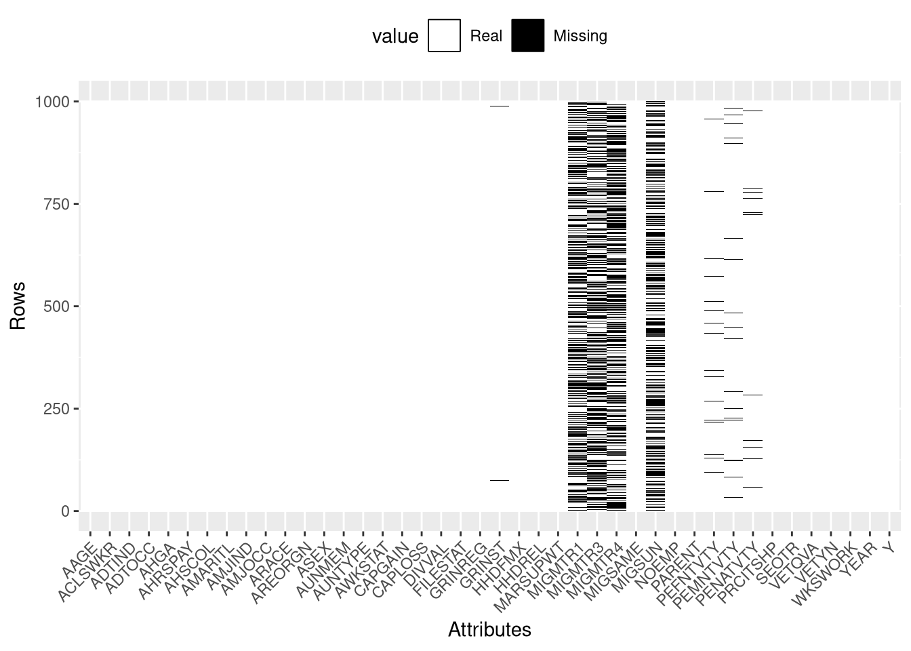
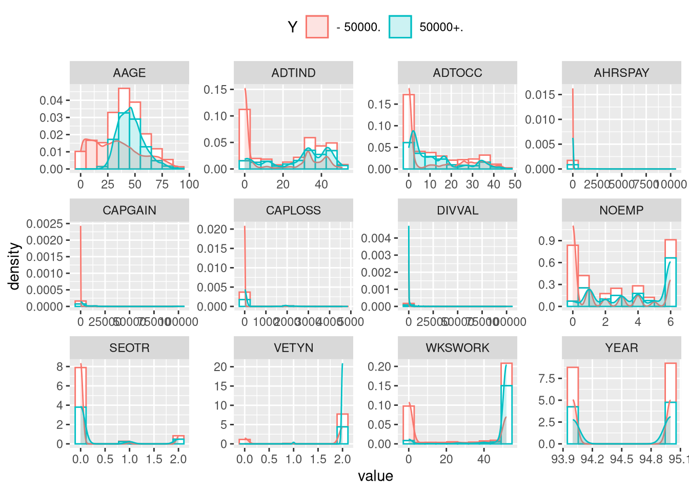
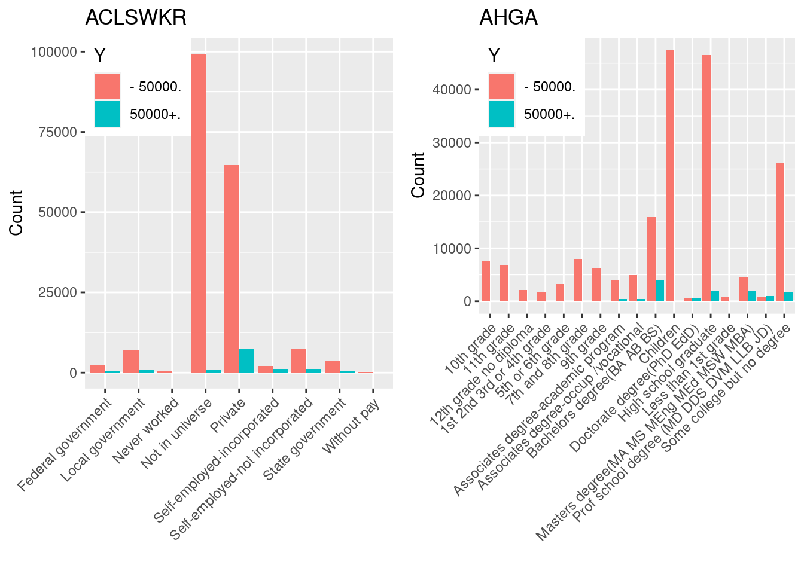
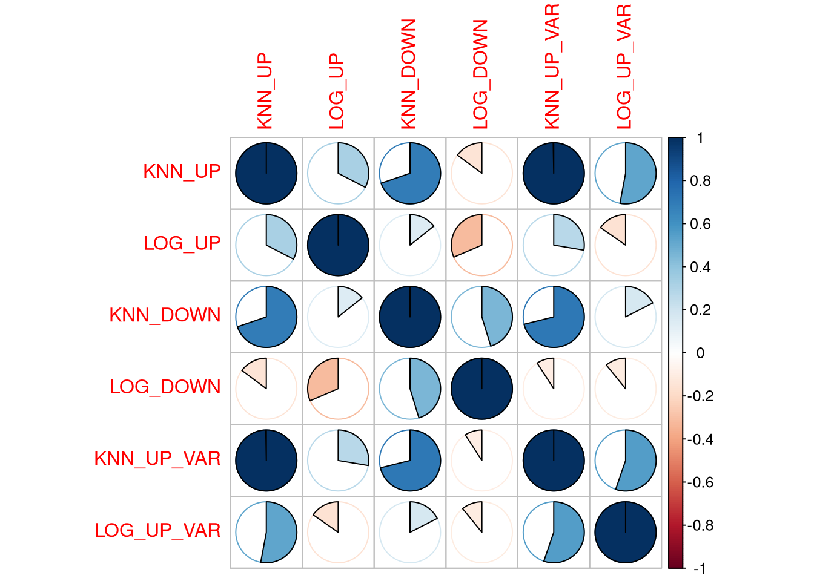

Please find below my report about the dataset provided by Dataiku. This analysis has been realized using R (version 3.3.3) with all packages updated on 21/04/2025, under a UNIX/LINUX environment (Debian 9.2). The provided script (code_jjoumaa.R) runs in about an hour with an Intel i7 6600U based computer equipped with 32 Gb RAM (DDR4).
1 Prepare Problem
1.1 Load libraries
Most of the data manipulation was done using data.table package due to its ability to handle large datasets. Data visualization was mostly done using ggplot2 package. For the modelling part, I’ve used caret package, which provides a lot of useful tools for data science.
As we’ll see in the next steps, both datasets (learning and validation one) present a lot of missing values in the form of ? in raw files, converted then in NA values in R.
Since neither dataset has column names, I’ve loaded the description file census_income_metadata.txt, and extracted rows mentioning column names.
Code
# selection of the right rows containing colnamesdatasetNames=fread("./dataiku_data/census_income_metadata.txt", nrows =(68-22), skip =22, drop ="V1")# extraction of word in capitalcolInter=datasetNames[, unlist(str_extract_all(V2, '\\b[A-Z]+[A-Z0-9]\\b'))]colInter
The problem was that 45 columns were mentioned in the description files (colInter), whereas both datasets only have 42 columns. To solve this, I’ve matched each column with their respective names based on the number of unique “value” by columns and the one exposed in the description file. Using this method, I’ve found that AGI, FEDTAX, PEARNVAL, PTOTVAL and TAXINC attributes could be removed from the initial column names, and that the attributes YEARS and Y (the attributes to model, i.e the income level) should be added.
Code
# number of instances for each attributesdataset[, sapply(.SD, function(x){length(unique(x))})]
# remove unexpected column namescolInter=colInter[-c(which(colInter=="AGI"))]colInter=colInter[-c(which(colInter=="FEDTAX"))]colInter=colInter[-c(which(colInter=="PEARNVAL"))]colInter=colInter[-c(which(colInter=="PTOTVAL"))]colInter=colInter[-c(which(colInter=="TAXINC"))]# add two more column namescolInter=c(colInter, c("YEAR", "Y"))colnames(dataset)=colInter[1:42]colnames(validation)=colInter[1:42]# dataset previewdatatable(head(validation, 5), extensions ='FixedColumns', options =list( dom ="t", scrollX =TRUE, fixedColumns =FALSE))
Table 1: Preview of the dataset
2 Summarize Data
2.1 Descriptive statistics
It is difficult to present all attributes, but a quick summary provides a good overview of the structure.
Code
# index of column with charactersncolCha=which(sapply(dataset, class)=="character")# conversion of characters in factorsdataset[, (ncolCha):=lapply(.SD, as.factor), .SDcols =ncolCha]# structure of the datasetkable(data.frame(variable =names(dataset), classe =sapply(dataset, class), first_values =sapply(dataset, function(x){paste0(head(x), collapse =", ")}), row.names =NULL))
Table 2: Structure of the dataset
variable
classe
first_values
AAGE
integer
73, 58, 18, 9, 10, 48
ACLSWKR
factor
Not in universe, Self-employed-not incorporated, Not in universe, Not in universe, Not in universe, Private
ADTIND
integer
0, 4, 0, 0, 0, 40
ADTOCC
integer
0, 34, 0, 0, 0, 10
AHGA
factor
High school graduate, Some college but no degree, 10th grade, Children, Children, Some college but no degree
AHRSPAY
integer
0, 0, 0, 0, 0, 1200
AHSCOL
factor
Not in universe, Not in universe, High school, Not in universe, Not in universe, Not in universe
AMARITL
factor
Widowed, Divorced, Never married, Never married, Never married, Married-civilian spouse present
AMJIND
factor
Not in universe or children, Construction, Not in universe or children, Not in universe or children, Not in universe or children, Entertainment
AMJOCC
factor
Not in universe, Precision production craft & repair, Not in universe, Not in universe, Not in universe, Professional specialty
ARACE
factor
White, White, Asian or Pacific Islander, White, White, Amer Indian Aleut or Eskimo
AREORGN
factor
All other, All other, All other, All other, All other, All other
ASEX
factor
Female, Male, Female, Female, Female, Female
AUNMEM
factor
Not in universe, Not in universe, Not in universe, Not in universe, Not in universe, No
AUNTYPE
factor
Not in universe, Not in universe, Not in universe, Not in universe, Not in universe, Not in universe
AWKSTAT
factor
Not in labor force, Children or Armed Forces, Not in labor force, Children or Armed Forces, Children or Armed Forces, Full-time schedules
CAPGAIN
integer
0, 0, 0, 0, 0, 0
CAPLOSS
integer
0, 0, 0, 0, 0, 0
DIVVAL
integer
0, 0, 0, 0, 0, 0
FILESTAT
factor
Nonfiler, Head of household, Nonfiler, Nonfiler, Nonfiler, Joint both under 65
GRINREG
factor
Not in universe, South, Not in universe, Not in universe, Not in universe, Not in universe
GRINST
factor
Not in universe, Arkansas, Not in universe, Not in universe, Not in universe, Not in universe
HHDFMX
factor
Other Rel 18+ ever marr not in subfamily, Householder, Child 18+ never marr Not in a subfamily, Child <18 never marr not in subfamily, Child <18 never marr not in subfamily, Spouse of householder
HHDREL
factor
Other relative of householder, Householder, Child 18 or older, Child under 18 never married, Child under 18 never married, Spouse of householder
Native- Born in the United States, Native- Born in the United States, Foreign born- Not a citizen of U S, Native- Born in the United States, Native- Born in the United States, Native- Born in the United States
SEOTR
integer
0, 0, 0, 0, 0, 2
VETQVA
factor
Not in universe, Not in universe, Not in universe, Not in universe, Not in universe, Not in universe
As mentioned above, a lot of missing values occurred in this dataset, especially for the attributes MIGMTR1, MIGMTR3, MIGMTR4 and MIGSUN.
2.2 Data visualizations
Another way to have an idea of the occurrence of missing values is to used data visualization.
Code
# build dataPlotdataPlot<-setDT(reshape2::melt(is.na(dataset)))# subsampledataPlot<-dataPlot[, .SD[sample(nrow(dataset), 1000)], by =Var2]%>%.[, `:=`(id_row, c(1:.N)), by =c("Var2")]# missing valuesggplot(dataPlot, aes(x =Var2, y =id_row))+geom_tile(aes(fill =value))+labs(x ="Attributes", y ="Rows")+scale_fill_manual( values =c("white", "black"), labels =c("Real", "Missing"))+theme( legend.position ="top", axis.text.x =element_text(angle =45, hjust =1), legend.key =element_rect(colour ="black"))

Figure 1: Representation of missing values within the learning dataset
It also helps for the representation of numerical attributes.
Code
# numerical attributes indexncolInt<-which(sapply(dataset, class)=="integer")# plot for each numerical attributesggplot(reshape2::melt(dataset[, .SD, .SDcols =c(ncolInt, ncol(dataset))], id.vars ="Y"),aes(x =value, col =Y, fill =Y))+geom_histogram(aes(y =..density..), bins =10, fill ="white")+geom_density(alpha =.2)+theme(legend.position ="top")+facet_wrap(~variable, scales ="free")

Figure 2: Histogram and density for each of the numerical attributes.
Nothing particularly clear here, except that some attributes do not seem to contain a lot of information (AHRSPAY, CAPGAIN, CAPLOSS, DIVVAL, SEOTR, VETYN, WKSWORK or YEAR). We can also note the attribute “AAGE” has a Gaussian-like distribution a bit shifted, especially for Y = "- 50000., which may require to be transformed. Let’s have a look at another representation of this data.
Figure 3: Boxplot for each of the numerical attributes.
Code
# nominal attributes namesncolFac<-names(which(sapply(dataset, class)=="factor"))# plot for each nominal attributesdataPlot<-lapply(ncolFac[-c(length(ncolFac))], function(x){A<-dataset[, levels(get(x)), by =Y]B<-dataset[, table(get(x)), by =Y]%>%.[, `:=`( V1 =as.integer(V1), levels =as.factor(A$V1))]ggplot(B, aes(x =as.factor(levels), y =V1, fill =Y))+geom_bar( stat ="identity", position =position_dodge())+labs(y ="Count", x ="", title =x)+theme( legend.justification =c(0, 1), legend.position =c(0, 1), axis.text.x =element_text(angle =45, hjust =1))})# print of the two first plotgrid.arrange(grobs =list(dataPlot[[1]], dataPlot[[2]]), ncol =2)

Figure 4: Barplot for each of the nominal attributes.
Code
# another way to it, which appears not working using Rmarkdown document# grid.arrange(grobs=dataPlot, ncol=2)
3 Prepare Data
3.1 Data Cleaning
When looking at Figure 1, it appears that a lot of missing values occurred within the learning dataset. Here, I’ve taken the liberty to “simply” removed these values. Another way to deal with missing values would have been to use an imputation method, such as the K-nearest neighbors method1 provided by the package caret (code commented below). Because this method requires high computational costs, I’ve preferred to stick to the first method, even if, as we’ll see in the next steps, it means the final model won’t be able to predict Y in some cases.
Code
# removal of missing valuesdatasetNa<-na.omit(dataset)## or we could have done something like this:# preProcValues = preProcess(dataset, method = c("knnImpute"))# dataset.imp = predict(preProcValues, dataset)
3.2 Feature Selection
As a first step to feature selection, I’ve decided to remove any attributes with a zero or near zero variance. For many models, this may cause the model to crash or the fit to be unstable.
Code
# identification of near zero variance attributesnzv<-nearZeroVar(datasetNa, saveMetrics =TRUE)datatable(nzv[nzv$nzv, ], caption ="Information relative to zero and near zero variance predictors.", option =list(dom ="t"))
Code
# removal of these predictorsdatasetNaNzv<-datasetNa[, .SD, .SDcols =!nzv$nzv]
The second step was to remove any attributes with a correlation higher than 0.75. This is a basic method, which could be improved by combining correlogram with significance test.
Code
# matrix correlationncolInt<-which(sapply(datasetNaNzv, class)=="integer")descrCor<-cor(datasetNaNzv[, .SD, .SDcols =ncolInt])# which attributes will be removed based on matrix correlationcorrplot(descrCor, method ="pie")highlyCorDescr<-findCorrelation(descrCor, cutoff =.75)names(ncolInt[highlyCorDescr])
Here, I’ve only removed the attribute “WKSWORK”. At the end of the “Feature selection” step, the current dataset includes 30 attributes instead of 42 in the original one.
3.3 Data Transforms
3.3.1 Yeo-Johnson transform
I’ve used the Yeo-Johnson transform, since the attributes “AAGE”, i.e the age of the people in this dataset, has a Gaussian-like distribution with a skew (Figure 2). To make it “more Gaussian”, I’ve simply performed a YeoJohnson transform; I would have normally performed a BoxCox transform, but it does not support raw values that are equal to zero.
Code
# calculate the pre-process parameters from the datasetpreprocessParams<-preProcess(datasetNaNzv[, "AAGE"], method =c("YeoJohnson"))# transform the dataset using the parametersdatasetNaNzv$AAGE<-predict(preprocessParams, datasetNaNzv[, "AAGE"])
3.3.2 One-Hot encoding
As we’ll see in the next steps, one-hot encoding was not really necessary for both algorithms tested hereafter. However, it may be a good way to improve computational costs for many algorithms that do not perform well, when dealing with nominal attributes.
Code
# one-hot encodingdummies<-dummyVars(Y~., data =datasetNaNzv)matDummies<-predict(dummies, newdata =datasetNaNzv)
As a consequence, some columns might appear to be a linear combination of others. To ensure the non-redundancy of information, I’ve removed these rows.
Code
# remove linear combinationcomboInfo<-findLinearCombos(matDummies)datasetNaNzvQr<-as.data.table(matDummies[, -comboInfo$remove])datasetNaNzvQr[, Y:=datasetNaNzv[, Y]]
3.4 Split-out validation dataset
I know you provided a “test file”, but the learning dataset is large enough to be split in a learning dataset and a validation dataset by itself. Moreover, my computer is not powerful enough to run models on the whole learning dataset, so I’ve split the learning dataset with 10% of the data for the training process and the other 90% for testing (with a powerful enough computers, I would split the dataset using 80% of the data for the learning step and the other 20% for the evaluation). In the last step, I’ll evaluate the chosen model on the provided “test file”.
Code
# identification of indexes for splittingset.seed(7)trainIndex<-createDataPartition(datasetNaNzvQr$Y, p =.1, list =FALSE, times =1)# splitdatasetNaNzvQr[, Y:=as.factor(make.names(Y))]dataTrain<-datasetNaNzvQr[trainIndex, ]dataTest<-datasetNaNzvQr[-trainIndex, ]
4 Evaluate Algorithms
4.1 Test options and evaluation metric
Here I’ve chosen to cross-validate the model using 5 folds repeated twice. As explained before, with a powerful enough computer I would encourage increasing these values. Because the problem to solve is a classification problem, the metric used to select the optimal model is the “Accuracy”, except for the “Stacking” part, where the area under the ROC curve was used.
Code
# cross-validationset.seed(7)trainControl<-trainControl( method ="repeatedcv", number =5, repeats =2, savePredictions ="final", # required for stacking classProbs =TRUE)# required for stacking# metric evaluationmetric<-"Accuracy"
Table 4: Proportion of each levels of the explaining variable.
… it can have significant negative impact on model fitting (by the way, it seems consistent that a large proportion of these people earn less than 50 000$ pear annum). Here I’ve explored two different ways to deal with it:
down-sampling: randomly subset all the classes in the training set so that their class frequencies match the least prevalent class.
up-sampling: randomly sample (with replacement) the minority class to be the same size as the majority class.
In addition, I’ve tested two different algorithms, the Logistic Regression, and k-Nearest Neighbors.
Code
# down-samplingtrainControl$sampling<-"down"# logistic regressionset.seed(7)fitLogDown<-train(Y~., data =dataTrain, method ="glm", family ="binomial", metric =metric, trControl =trainControl)# KNNset.seed(7)fitKnnDown<-train(Y~., data =dataTrain, method ="knn", metric =metric, trControl =trainControl)# up-samplingtrainControl$sampling<-"up"# logistic regressionset.seed(7)fitLogUp<-train(Y~., data =dataTrain, method ="glm", family ="binomial", metric =metric, trControl =trainControl)# KNNset.seed(7)fitKnnUp<-train(Y~., data =dataTrain, method ="knn", metric =metric, trControl =trainControl)
It appears the up-sampling method performs better than the down-sampling. In addition, the k-Nearest Neighbors algorithm provides better results than the Logistic Regression one. Let’s now compare both algorithms using the up-sampling method with a dataset including nominal attributes (i.e. not using one-hot encoding).
Code
# new data split based on the dataset without hot encodingdatasetNaNzv[, Y:=as.factor(make.names(Y))]dataTrainVar<-datasetNaNzv[trainIndex, ]dataTestVar<-datasetNaNzv[-trainIndex, ]# logistic regressionset.seed(7)fitLogUpVar<-train(Y~., data =dataTrainVar, method ="glm", family ="binomial", metric =metric, trControl =trainControl)# KNNset.seed(7)fitKnnUpVar<-train(Y~., data =dataTrainVar, method ="knn", metric =metric, trControl =trainControl)# resampleresults<-resamples(list( KNN_UP =fitKnnUp, LOG_UP =fitLogUp, KNN_DOWN =fitKnnDown, LOG_DOWN =fitLogDown, KNN_UP_VAR =fitKnnUpVar, LOG_UP_VAR =fitLogUpVar))# summarysummary(results)
Using direct nominal attributes instead of one-hot encoding provides better results (i.e. higher accuracy) for the Logistic Regression, which is not the case for k-Nearest Neighbors algorithm, which provides the same accuracy.
5 Improve Accuracy
5.1 Algorithm Tuning
Depending on the algorithm to chose, we can improve the accuracy by choosing the appropriate set of parameters. Below, you’ll find a recipe to find the optimal number of neighbors to set when using a k-Nearest Neighbors algorithm. Due to high computational cost, I did not run this code.
Code
# search for the optimal number of neighbors K (did not run)set.seed(7)grid<-expand.grid(.k =seq(1, 20, by =1))fitKnnUpVar<-train(Y~., data =dataTrainVar, method ="knn", metric =metric, tuneGrid =grid, trControl =trainControl)# tuning kNN parameterplot(fitKnnUpVar)
5.2 Ensembles
5.2.1 Stacking
Another way to improve the accuracy is to combine the predictions of several models into ensemble predictions. To do this, we first have to make sure predictions from sub-models have a low correlation.
Code
# correlation of models pairs of predictionscorrplot(modelCor(results), method ="pie")

Figure 7: Correlogram of the predictions by models.
Here, that seems to be the case, since no one has a high correlation (i.e > 0.75). I’ve decided to use both algorithms using nominal attributes and the up-sampling method to build a meta-model (multiFit).
Code
# cross-validationstackControl<-trainControl( method ="repeatedcv", number =5, repeats =2, savePredictions ="final", classProbs =TRUE)# list of modelsset.seed(7)multiModels<-caretList(Y~., data =dataTrainVar, methodList =c("glm", "knn"), tuneList =list( glm =caretModelSpec( method ="glm", family ="binomial"), knn =caretModelSpec(method ="knn")), trControl =trainControl)# stackingset.seed(7)multiFits<-caretEnsemble(multiModels, trControl =stackControl)print(multiFits)
The following models were ensembled: glm, knn, glm.1, knn.1
caret::train model:
Greedy Mean Squared Error Optimizer
9514 samples
8 predictor
2 classes: 'X..50000.', 'X50000..'
No pre-processing
Resampling: Cross-Validated (5 fold, repeated 2 times)
Summary of sample sizes: 7611, 7612, 7611, 7612, 7610, 7611, ...
Resampling results:
Accuracy Kappa
0.8332439 0.2084181
Tuning parameter 'max_iter' was held constant at a value of 100
Final model:
Greedy MSE
RMSE: 0.3381455
Weights:
X..50000. X50000..
glm_X..50000. 0.35 0.00
glm_X50000.. 0.00 0.35
knn_X..50000. 0.29 0.00
knn_X50000.. 0.00 0.29
glm.1_X..50000. 0.10 0.01
glm.1_X50000.. 0.01 0.10
knn.1_X..50000. 0.25 0.00
knn.1_X50000.. 0.00 0.25
The accuracy seems to be better than both algorithms alone (Log: 0.75 and kNN: 0.8, 0.75, 0.71, whereas stacking: 0.83). However, the Kappa value of 0 is symptomatic of a problem that we’re going to clarify when looking at the predictions.
5.2.2 Boosting
Another way to used ensemble predictions is to use an algorithm based on boosting method. The idea here is to build multiple models where each of which learns to fix the prediction errors of a prior model in the chain. Let’s test one of the most popular boosting machine learning algorithms, the C5.0 classification based on a set of rules.
Here comes the part where I’ve tested the two ensemble models (stacking and boosting) predictions on your validation dataset. But first, I have to pre-process this dataset to make sure both models will correctly run.
Code
# remove missing valuevalidationNa<-na.omit(validation)# keep the same attributes used in the learning datasetvalidationNa<-validationNa[, .SD, .SDcols =colnames(dataTrainVar)]# suitable name for R (i.e. the same as the learning dataset)validationNa[, Y:=make.names(Y)]# Yeo-Johnson transform of the attribute AAGEvalidationNa$AAGE<-predict(preprocessParams, validationNa[, "AAGE"])# convert characters to factorsncolCha<-names(which(sapply(validationNa, class)=="character"))validationNa[, (ncolCha):=lapply(.SD, as.factor), .SDcols =ncolCha]
Because I removed a lot of rows during the data cleaning step, it removed some levels of nominal attributes in the learning dataset. This implies that neither model can make prediction for this levels. To avoid errors when predicting on the validation dataset, I’ve removed any rows that do not match levels of the training dataset.
Code
# only keep levels of factors in the validation datatset that match those in the learning onefor(iinwhich(dataTrainVar[, lapply(.SD, class), .SDcols =-"Y"]=="factor")){x<-validationNa[, lapply(.SD, unique), .SDcols =i]x<-as.character(x[[1]])y<-dataTrainVar[, lapply(.SD, unique), .SDcols =i]y<-as.character(y[[1]])if(length(setdiff(x, y))>0){delNrow<-as.numeric()for(jin1:length(setdiff(x, y))){delNrow<-c(delNrow, which(validationNa[, i, with =F]==setdiff(x, y)[j]))}validationNa<-validationNa[-delNrow, ]}}
Now that we have a validation dataset that matches the same column names and levels of nominal attributes from the learning one, we can make predictions and compare them to the real values.
We can see that the stacking model (i.eLog + kNN) has, indeed, an accuracy of 0.83 which is higher than the boosting model (i.eC5.0) with “only” 0.92. However, the confusion matrix shows the stacking model simply predicts the same value (the one from the prevalent class), which results in a misleading accuracy (i.e accuracy = proportion of the majority class).
Code
# accuracy & proportion of the majority classaccuracyStack=round(confStack$overall[1], 2)# accuracy of stack modelpropMajorClass=round(max(prop.table(table(validationNa$Y))), 2)# prop of prevalent class# accuracy = proportion of the majority class?accuracyStack==propMajorClass
6.2 Conclusion
6.2.1 Some insights
Based on the calculation of variable importance in the fitC5UpVar model, the three variables that, in order of importance, are the most important when estimating if the income level will be more than 50 000$ per annum seems to be:
the tax filer status (levels: Nonfiler)
the age
the number of persons that worked for employer
Code
# variable importance for the fitC5UpVar modelvarImp(fitC5UpVar, scale =100)
Figure 8: Distribution and barplot of the three most important variables when predicting the income level of the person represented by the record.
6.2.2 Go further
Here are few ideas to improve this analysis:
Data Preparation
Data cleaning
Try to impute missing value using k nearest neighbors or bagged tree algorithm. It should allow the selected model to predict the income level for all people, regardless of the different levels of a factor in any nominal attributes.
Look closer for outliers and maybe try some methods like PCA to remove noises.
Data transform
Try normalized numerical variables.
Consider Box-Cox transform on other numerical attributes.
Data split
Simply use the whole learning dataset and not 10 % of it.
Evaluate algorithms
Spot Check Algorithm: test more linear and non-linear algorithms.
Improve accuracy
Ensembles
For boosting, it’s the same, let’s take a look at several boosting machine learning algorithms which seems to be very promising.
For stacking, same as above, test different combinations of models, and then combine predictions using several different algorithms (i.e not just a simple linear model, like I did here).
Footnotes
Another method is implemented based on bagged trees but at higher computational costs.↩︎
Source Code
---title: "Dataiku Interview Project"author: - name: "Joffrey Joumaa"date: "December 5, 2017"format: html: toc: true toc-location: left number-sections: true smooth-scroll: true code-fold: true code-tools: true code-link: true df-print: paged fig-align: "center"execute: echo: true cache: true warning: falseknitr: opts_chunk: message: false tidy: styler---```{r setup}#| include: false#| eval: falseknitr::opts_chunk$set( echo = TRUE, message = FALSE, warning = FALSE, comment = NA, cache = TRUE, fig.align = "center")``````{=html}<style>body {text-align: justify}</style>```Please find below my report about the dataset provided by Dataiku. This analysis has been realized using R (version 3.3.3) with all packages updated on `r format(Sys.Date(), "%d/%m/%Y")`, under a UNIX/LINUX environment (Debian 9.2). The provided script (`code_jjoumaa.R`) runs in about an hour with an Intel i7 6600U based computer equipped with 32 Gb RAM (DDR4).# Prepare Problem## Load librariesMost of the data manipulation was done using `data.table` package due to its ability to handle large datasets. Data visualization was mostly done using `ggplot2` package. For the modelling part, I've used `caret` package, which provides a lot of useful tools for data science.```{r load_libraries}# data visualizationlibrary(ggplot2)library(corrplot)library(gridExtra)# data manipulationlibrary(data.table)library(stringr)library(magrittr)# data modelinglibrary(caret)library(caretEnsemble)library(RANN)# markdown tablelibrary(knitr)library(DT)library(pander)# (optional) multithreadinglibrary(doMC)registerDoMC(cores = 4)```## Load datasetAs we'll see in the next steps, both datasets (learning and validation one) present a lot of missing values in the form of `?` in raw files, converted then in `NA` values in R.```{r load_dataset}# learning datasetdataset = fread("./dataiku_data/census_income_learn.csv", na.strings = "?")# validation datasetvalidation = fread("./dataiku_data/census_income_test.csv", na.strings = "?")```Since neither dataset has column names, I've loaded the description file `census_income_metadata.txt`, and extracted rows mentioning column names.```{r load_colnames}# selection of the right rows containing colnamesdatasetNames = fread("./dataiku_data/census_income_metadata.txt", nrows = (68-22), skip = 22, drop = "V1")# extraction of word in capitalcolInter = datasetNames[, unlist(str_extract_all(V2, '\\b[A-Z]+[A-Z0-9]\\b'))]colInter```The problem was that 45 columns were mentioned in the description files (`colInter`), whereas both datasets only have 42 columns. To solve this, I've matched each column with their respective names based on the number of unique "value" by columns and the one exposed in the description file. Using this method, I've found that AGI, FEDTAX, PEARNVAL, PTOTVAL and TAXINC attributes could be removed from the initial column names, and that the attributes YEARS and Y (the attributes to model, *i.e* the income level) should be added.```{r tbl-right_colnames}#| tbl-cap: "Preview of the dataset"# number of instances for each attributesdataset[, sapply(.SD, function(x){length(unique(x))})]# remove unexpected column namescolInter = colInter[-c(which(colInter == "AGI"))]colInter = colInter[-c(which(colInter == "FEDTAX"))]colInter = colInter[-c(which(colInter == "PEARNVAL"))]colInter = colInter[-c(which(colInter == "PTOTVAL"))]colInter = colInter[-c(which(colInter == "TAXINC"))]# add two more column namescolInter = c(colInter, c("YEAR", "Y"))colnames(dataset) = colInter[1:42]colnames(validation) = colInter[1:42]# dataset previewdatatable(head(validation, 5), extensions = 'FixedColumns', options = list( dom = "t", scrollX = TRUE, fixedColumns = FALSE))```# Summarize Data## Descriptive statisticsIt is difficult to present all attributes, but a quick summary provides a good overview of the structure.```{r tbl-descriptive_stat}#| tbl-cap: "Structure of the dataset"# index of column with charactersncolCha = which(sapply(dataset, class) == "character")# conversion of characters in factorsdataset[, (ncolCha):=lapply(.SD, as.factor), .SDcols = ncolCha]# structure of the datasetkable(data.frame(variable = names(dataset), classe = sapply(dataset, class), first_values = sapply(dataset, function(x) { paste0(head(x), collapse = ", ")}), row.names = NULL))``````{r tbl-summary-data}#| tbl-cap: "Summary of the dataset"# summary of the datasetpander(summary(dataset))```As mentioned above, a lot of missing values occurred in this dataset, especially for the attributes MIGMTR1, MIGMTR3, MIGMTR4 and MIGSUN.## Data visualizationsAnother way to have an idea of the occurrence of missing values is to used data visualization.```{r fig-missingValue}#| fig.cap="Representation of missing values within the learning dataset"# build dataPlotdataPlot = setDT(reshape2::melt(is.na(dataset)))# subsampledataPlot = dataPlot[,.SD[sample(nrow(dataset), 1000)], by=Var2] %>% .[, `:=`(id_row, c(1:.N)), by = c("Var2")]# missing valuesggplot(dataPlot, aes(x = Var2, y = id_row))+ geom_tile(aes(fill = value))+ labs(x = "Attributes", y = "Rows")+ scale_fill_manual(values = c("white", "black"), labels = c("Real", "Missing")) + theme(legend.position = "top", axis.text.x = element_text(angle = 45, hjust = 1), legend.key = element_rect(colour = "black"))```It also helps for the representation of numerical attributes.```{r fig-densityHistogram}#| fig.cap: "Histogram and density for each of the numerical attributes."# numerical attributes indexncolInt = which(sapply(dataset, class) == "integer")# plot for each numerical attributesggplot(reshape2::melt(dataset[, .SD, .SDcols = c(ncolInt, ncol(dataset))], id.vars = "Y"), aes(x = value, col = Y, fill = Y))+ geom_histogram(aes(y = ..density..), bins = 10, fill = "white")+ geom_density(alpha = .2)+ theme(legend.position = "top")+ facet_wrap(~variable, scales = "free")```Nothing particularly clear here, except that some attributes do not seem to contain a lot of information (AHRSPAY, CAPGAIN, CAPLOSS, DIVVAL, SEOTR, VETYN, WKSWORK or YEAR). We can also note the attribute "AAGE" has a Gaussian-like distribution a bit shifted, especially for `Y = "- 50000.`, which may require to be transformed. Let's have a look at another representation of this data.```{r fig-boxplot}#| fig.cap: "Boxplot for each of the numerical attributes."ggplot(reshape2::melt(dataset[, .SD, .SDcols = c(ncolInt, ncol(dataset))], id.vars = "Y"), aes(x = "", y = value, col = Y, fill = Y)) + geom_boxplot(alpha = .2)+ theme(legend.position = "top", axis.title.x = element_blank(), axis.text.x = element_blank(), axis.ticks.x = element_blank())+ facet_wrap(~variable, scales = "free")``````{r}#| echo: true#| eval: false# nominal attributes namesncolFac =names(which(sapply(dataset, class) =="factor"))# plot for each nominal attributesdataPlot=lapply(ncolFac[-c(length(ncolFac))], function(x){ A = dataset[, levels(get(x)), by = Y] B = dataset[, table(get(x)), by = Y] %>% .[, `:=`(V1 =as.integer(V1), levels =as.factor(A$V1))]ggplot(B, aes(x =as.factor(levels), y = V1, fill = Y))+geom_bar(stat="identity", position=position_dodge())+labs(y ="Count", x ="", title = x)+theme(legend.justification =c(0, 1), legend.position =c(0, 1), axis.text.x =element_text(angle =45, hjust =1))})# print of the two first plotgrid.arrange(grobs=list(dataPlot[[1]], dataPlot[[2]]), ncol=2)``````{r fig-nominalAttributes}#| echo: false#| fig.cap: "Barplot for each of the nominal attributes."dataset[, (ncolCha):=lapply(.SD, as.factor), .SDcols=ncolCha]# nominal attributes namesncolFac = names(which(sapply(dataset, class) == "factor"))# plot for each attributesdataPlot=lapply(ncolFac[-c(length(ncolFac))], function(x){ A = dataset[, levels(get(x)), by=Y] B = dataset[, table(get(x)), by=Y] %>% .[, `:=`(V1 = as.integer(V1), levels = as.factor(A$V1))] ggplot(B, aes(x = as.factor(levels), y = V1, fill=Y))+ geom_bar(stat="identity", position=position_dodge())+ labs(y = "Count", x = "", title = x)+ theme(legend.justification = c(0, 1), legend.position = c(0, 1), axis.text.x = element_text(angle = 45, hjust = 1))})# print of the two first plotgrid.arrange(grobs=list(dataPlot[[1]], dataPlot[[2]]), ncol=2)``````{r just_comment}# another way to it, which appears not working using Rmarkdown document# grid.arrange(grobs=dataPlot, ncol=2)```# Prepare Data## Data Cleaning {#dataCleaning}When looking at @fig-missingValue, it appears that a lot of missing values occurred within the learning dataset. Here, I've taken the liberty to "simply" removed these values. Another way to deal with missing values would have been to use an imputation method, such as the [K-nearest neighbors method](https://topepo.github.io/caret/pre-processing.html#imputation)[^1] provided by the package `caret` (code commented below). Because this method requires high computational costs, I've preferred to stick to the first method, even if, as we'll see in the next steps, it means the final model won't be able to predict `Y` in some cases.```{r removal_NA}# removal of missing valuesdatasetNa = na.omit(dataset)## or we could have done something like this:# preProcValues = preProcess(dataset, method = c("knnImpute"))# dataset.imp = predict(preProcValues, dataset)```[^1]: Another method is implemented based on bagged trees but at higher computational costs.## Feature SelectionAs a first step to feature selection, I've decided to remove any attributes with a zero or near zero variance. For many models, this may cause the model to crash or the fit to be unstable.```{r nzv}# identification of near zero variance attributesnzv = nearZeroVar(datasetNa, saveMetrics = TRUE)datatable(nzv[nzv$nzv, ], caption = "Information relative to zero and near zero variance predictors.", option = list(dom = "t"))# removal of these predictorsdatasetNaNzv = datasetNa[, .SD, .SDcols = !nzv$nzv]```The second step was to remove any attributes with a correlation higher than 0.75. This is a basic method, which could be improved by combining correlogram with significance test.```{r fig-correlation}#| fig.cap: "Correlogram of dataset."# matrix correlationncolInt = which(sapply(datasetNaNzv, class) == "integer")descrCor = cor(datasetNaNzv[, .SD, .SDcols = ncolInt])# which attributes will be removed based on matrix correlationcorrplot(descrCor, method = "pie")highlyCorDescr = findCorrelation(descrCor, cutoff = .75)names(ncolInt[highlyCorDescr])# attribute "WKSWORK" removeddatasetNaNzv[, (names(ncolInt[highlyCorDescr])):= NULL]```Here, I've only removed the attribute "WKSWORK". At the end of the "Feature selection" step, the current dataset includes `r dim(datasetNaNzv)[2]` attributes instead of `r dim(dataset)[2]` in the original one.## Data Transforms### Yeo-Johnson transformI've used the Yeo-Johnson transform, since the attributes "AAGE", *i.e* the age of the people in this dataset, has a Gaussian-like distribution with a skew (@fig-densityHistogram). To make it "more Gaussian", I've simply performed a `YeoJohnson` transform; I would have normally performed a `BoxCox` transform, but it does not support raw values that are equal to zero.```{r yeojohnson}# calculate the pre-process parameters from the datasetpreprocessParams = preProcess(datasetNaNzv[, "AAGE"], method=c("YeoJohnson"))# transform the dataset using the parametersdatasetNaNzv$AAGE=predict(preprocessParams, datasetNaNzv[, "AAGE"])```### One-Hot encodingAs we'll see in [the next steps](#CompareAlgorithm), one-hot encoding was not really necessary for both algorithms tested hereafter. However, it may be a good way to improve computational costs for many algorithms that do not perform well, when dealing with nominal attributes.```{r hot_encoding}# one-hot encodingdummies = dummyVars(Y~., data = datasetNaNzv)matDummies = predict(dummies, newdata = datasetNaNzv)```As a consequence, some columns might appear to be a linear combination of others. To ensure the non-redundancy of information, I've removed these rows.```{r linear_combination}# remove linear combinationcomboInfo = findLinearCombos(matDummies)datasetNaNzvQr = as.data.table(matDummies[, -comboInfo$remove])datasetNaNzvQr[, Y:=datasetNaNzv[, Y]]```## Split-out validation datasetI know you provided a "test file", but the learning dataset is large enough to be split in a learning dataset and a validation dataset by itself. Moreover, my computer is not powerful enough to run models on the whole learning dataset, so I've split the learning dataset with 10\% of the data for the training process and the other 90\% for testing (with a powerful enough computers, I would split the dataset using 80\% of the data for the learning step and the other 20\% for the evaluation). In the [last step](#prediction), I'll evaluate the chosen model on the provided "test file".```{r split_out}# identification of indexes for splittingset.seed(7)trainIndex = createDataPartition(datasetNaNzvQr$Y, p = .1, list = FALSE, times = 1)# splitdatasetNaNzvQr[, Y:=as.factor(make.names(Y))]dataTrain = datasetNaNzvQr[trainIndex, ]dataTest = datasetNaNzvQr[-trainIndex, ]```# Evaluate Algorithms## Test options and evaluation metricHere I've chosen to cross-validate the model using 5 folds repeated twice. As explained before, with a powerful enough computer I would encourage increasing these values. Because the problem to solve is a classification problem, the metric used to select the optimal model is the "Accuracy", except for the ["Stacking"](#stacking) part, where the area under the ROC curve was used.```{r options}# cross-validationset.seed(7)trainControl = trainControl(method = "repeatedcv", number = 5, repeats = 2, savePredictions = "final", # required for stacking classProbs = TRUE) # required for stacking# metric evaluationmetric = "Accuracy"```## Spot Check AlgorithmsBecause the dataset is strongly imbalance...```{r tbl-propImbalance}#| tbl-cap: "Proportion of each levels of the explaining variable."# proportion of each levels of Ydatatable(data.table( freq = table(datasetNaNzvQr$Y), percentage = round(prop.table(table(datasetNaNzvQr$Y))*100, 2)), option = list(dom = "t"))```... it can have significant negative impact on model fitting (by the way, it seems consistent that a large proportion of these people earn less than 50 000$ pear annum). Here I've explored two different ways to deal with it:* *down-sampling*: randomly subset all the classes in the training set so that their class frequencies match the least prevalent class.* *up-sampling*: randomly sample (with replacement) the minority class to be the same size as the majority class.In addition, I've tested two different algorithms, the **Logistic Regression**, and **k-Nearest Neighbors**.```{r modelDownUp}# down-samplingtrainControl$sampling = "down"# logistic regressionset.seed(7)fitLogDown = train(Y~., data = dataTrain, method = "glm", family = "binomial", metric = metric, trControl = trainControl)# KNNset.seed(7)fitKnnDown = train(Y~., data = dataTrain, method = "knn", metric = metric, trControl = trainControl)# up-samplingtrainControl$sampling = "up"# logistic regressionset.seed(7)fitLogUp = train(Y~., data = dataTrain, method = "glm", family = "binomial", metric = metric, trControl = trainControl)# KNNset.seed(7)fitKnnUp = train(Y~., data = dataTrain, method = "knn", metric = metric, trControl = trainControl)```## Compare Algorithms {#CompareAlgorithm}```{r compare1_models}# resampleresults = resamples(list(KNN_UP = fitKnnUp, LOG_UP = fitLogUp, KNN_DOWN = fitKnnDown, LOG_DOWN = fitLogDown))# summarysummary(results)```It appears the *up-sampling* method performs better than the *down-sampling*. In addition, the **k-Nearest Neighbors** algorithm provides better results than the **Logistic Regression** one. Let's now compare both algorithms using the *up-sampling* method with a dataset including nominal attributes (*i.e.* not using one-hot encoding).```{r model_var}# new data split based on the dataset without hot encodingdatasetNaNzv[, Y:=as.factor(make.names(Y))]dataTrainVar = datasetNaNzv[trainIndex, ]dataTestVar = datasetNaNzv[-trainIndex, ]# logistic regressionset.seed(7)fitLogUpVar = train(Y~., data = dataTrainVar, method = "glm", family = "binomial", metric = metric, trControl = trainControl)# KNNset.seed(7)fitKnnUpVar = train(Y~., data = dataTrainVar, method = "knn", metric = metric, trControl = trainControl)# resampleresults = resamples(list(KNN_UP = fitKnnUp, LOG_UP = fitLogUp, KNN_DOWN = fitKnnDown, LOG_DOWN = fitLogDown, KNN_UP_VAR = fitKnnUpVar, LOG_UP_VAR = fitLogUpVar))# summarysummary(results)``````{r fig-dotplot}#| fig.cap: "Models comparison."dotplot(results)```Using direct nominal attributes instead of one-hot encoding provides better results (*i.e.* higher accuracy) for the **Logistic Regression**, which is not the case for **k-Nearest Neighbors** algorithm, which provides the same accuracy.# Improve Accuracy## Algorithm TuningDepending on the algorithm to chose, we can improve the accuracy by choosing the appropriate set of parameters. Below, you'll find a recipe to find the optimal number of neighbors to set when using a **k-Nearest Neighbors** algorithm. Due to high computational cost, I did not run this code.```{r model_tuning}#| echo: true#| eval: false# search for the optimal number of neighbors K (did not run)set.seed(7)grid = expand.grid(.k = seq(1, 20, by = 1))fitKnnUpVar = train(Y~., data=dataTrainVar, method="knn", metric=metric, tuneGrid=grid, trControl=trainControl)# tuning kNN parameterplot(fitKnnUpVar)```## Ensembles### Stacking {#stacking}Another way to improve the accuracy is to combine the predictions of several models into ensemble predictions. To do this, we first have to make sure predictions from sub-models have a low correlation.```{r fig-correlogramPrediction}#| fig.cap: "Correlogram of the predictions by models."# correlation of models pairs of predictionscorrplot(modelCor(results), method="pie")```Here, that seems to be the case, since no one has a high correlation (*i.e* > 0.75). I've decided to use both algorithms using nominal attributes and the *up-sampling* method to build a *meta*-model (`multiFit`).```{r model_stack}# cross-validationstackControl = trainControl(method = "repeatedcv", number = 5, repeats = 2, savePredictions = "final", classProbs = TRUE)# list of modelsset.seed(7)multiModels = caretList(Y~., data = dataTrainVar, methodList = c("glm", "knn"), tuneList = list(glm = caretModelSpec(method='glm', family='binomial'), knn = caretModelSpec(method='knn')), trControl = trainControl)# stackingset.seed(7)multiFits = caretEnsemble(multiModels, trControl = stackControl)print(multiFits)```The accuracy seems to be better than both algorithms alone (`Log`: `r round(fitLogUpVar$results$Accuracy, 2)` and `kNN`: `r round(fitKnnUpVar$results$Accuracy, 2)`, whereas `stacking`: `r round(multiFits$error$Accuracy, 2)`). However, the Kappa value of 0 is symptomatic of a problem that we're going to clarify when looking at the [predictions](#prediction).### BoostingAnother way to used ensemble predictions is to use an algorithm based on boosting method. The idea here is to build multiple models where each of which learns to fix the prediction errors of a prior model in the chain. Let's test one of the most popular boosting machine learning algorithms, the **C5.0** classification based on a set of rules.```{r boosting}# C5.0 classificationset.seed(7)fitC5UpVar = train(Y~., data = dataTrainVar, method = "C5.0Rules", metric = metric, trControl = trainControl)print(fitC5UpVar)```# Finalize Model## Predictions on validation dataset {#prediction}Here comes the part where I've tested the two ensemble models (stacking and boosting) predictions on your validation dataset. But first, I have to pre-process this dataset to make sure both models will correctly run.```{r validation_test}# remove missing valuevalidationNa = na.omit(validation)# keep the same attributes used in the learning datasetvalidationNa = validationNa[, .SD, .SDcols = colnames(dataTrainVar)]# suitable name for R (i.e. the same as the learning dataset)validationNa[, Y:=make.names(Y)]# Yeo-Johnson transform of the attribute AAGEvalidationNa$AAGE = predict(preprocessParams, validationNa[, "AAGE"])# convert characters to factorsncolCha = names(which(sapply(validationNa, class) == "character"))validationNa[, (ncolCha) := lapply(.SD, as.factor), .SDcols=ncolCha]```Because I removed a lot of rows during the [data cleaning](#dataCleaning) step, it removed some levels of nominal attributes in the learning dataset. This implies that neither model can make prediction for this levels. To avoid errors when predicting on the validation dataset, I've removed any rows that do not match levels of the training dataset.```{r levels_removed}# only keep levels of factors in the validation datatset that match those in the learning onefor (i in which(dataTrainVar[, lapply(.SD, class), .SDcols=-"Y"] == "factor")){ x = validationNa[, lapply(.SD, unique), .SDcols = i] x = as.character(x[[1]]) y = dataTrainVar[, lapply(.SD, unique), .SDcols = i] y = as.character(y[[1]]) if (length(setdiff(x, y))>0){ delNrow = as.numeric() for (j in 1:length(setdiff(x, y))){ delNrow = c(delNrow, which(validationNa[, i, with=F] == setdiff(x, y)[j])) } validationNa = validationNa[-delNrow, ] }}```Now that we have a validation dataset that matches the same column names and levels of nominal attributes from the learning one, we can make predictions and compare them to the real values.```{r prediction, eval=FALSE}# make predictionpredictionsStack = predict(multiFits, validationNa[, .SD, .SDcols = -"Y"], type="raw")predictionsC5 = predict(fitC5UpVar, validationNa[, .SD, .SDcols = -"Y"], type="raw")# confusion matrix calculationconfStack = confusionMatrix(predictionsStack, validationNa[, Y])confC5 = confusionMatrix(predictionsC5, validationNa[, Y])confStackconfC5```We can see that the stacking model (*i.e* `Log` + `kNN`) has, indeed, an accuracy of `r round(multiFits$error$Accuracy, 2)` which is higher than the boosting model (*i.e* `C5.0`) with "only" `r round(fitC5UpVar$results$Accuracy, 2)`. However, the confusion matrix shows the stacking model simply predicts the same value (the one from the prevalent class), which results in a misleading accuracy (*i.e* accuracy = proportion of the majority class).```{r accuracy, eval=FALSE}# accuracy & proportion of the majority classaccuracyStack = round(confStack$overall[1], 2) # accuracy of stack modelpropMajorClass = round(max(prop.table(table(validationNa$Y))), 2) # prop of prevalent class# accuracy = proportion of the majority class?accuracyStack == propMajorClass```## Conclusion### Some insightsBased on the calculation of variable importance in the `fitC5UpVar` model, the three variables that, in order of importance, are the most important when estimating if the income level will be more than 50 000$ per annum seems to be:* the tax filer status (levels: Nonfiler)* the age* the number of persons that worked for employer```{r fig-varImportance}#| fig.cap: "Distribution and barplot of the three most important variables when predicting the income level of the person represented by the record."# variable importance for the fitC5UpVar modelvarImp(fitC5UpVar, scale = 100)# some plot to illustrategrid.arrange( ggplot(dataset, aes(x = FILESTAT, fill=Y))+ geom_bar(position = position_dodge())+ theme(legend.position = "top"), ggplot(dataset, aes(x = AAGE, fill = Y))+ geom_bar()+ theme(legend.position = "none"), ggplot(dataset, aes(x = NOEMP, fill = Y))+ geom_bar(position = position_dodge())+ theme(legend.position="none"), nrow = 3, heights = c(2, 1.5, 1.5))```### Go furtherHere are few ideas to improve this analysis:* Data Preparation + Data cleaning - Try to impute missing value using k nearest neighbors or bagged tree algorithm. It should allow the selected model to predict the income level for all people, regardless of the different levels of a factor in any nominal attributes. - Look closer for outliers and maybe try some methods like PCA to remove noises. + Data transform - Try normalized numerical variables. - Consider Box-Cox transform on other numerical attributes. + Data split - Simply use the whole learning dataset and not 10 \% of it.* Evaluate algorithms + Spot Check Algorithm: test more linear and non-linear algorithms.* Improve accuracy + Ensembles - For boosting, it's the same, let's take a look at several boosting machine learning algorithms which seems to be very promising. - For stacking, same as above, test different combinations of models, and then combine predictions using several different algorithms (*i.e* not just a simple linear model, like I did here).